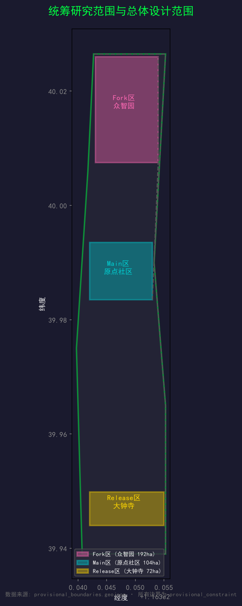
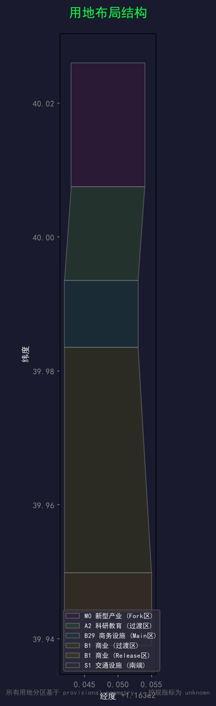
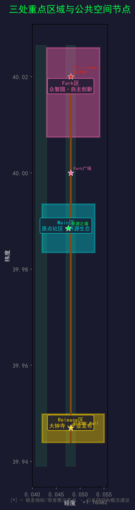
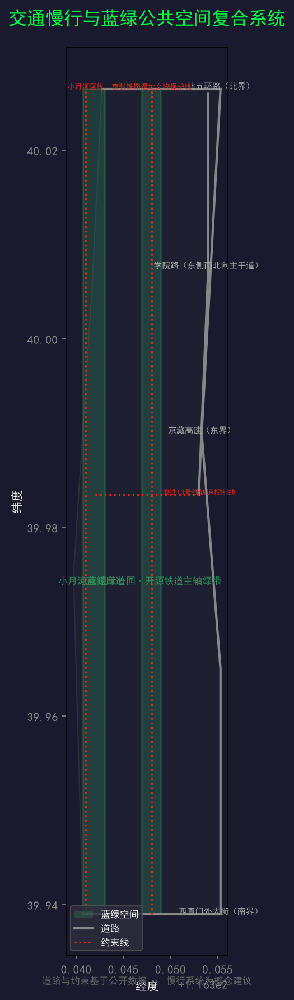
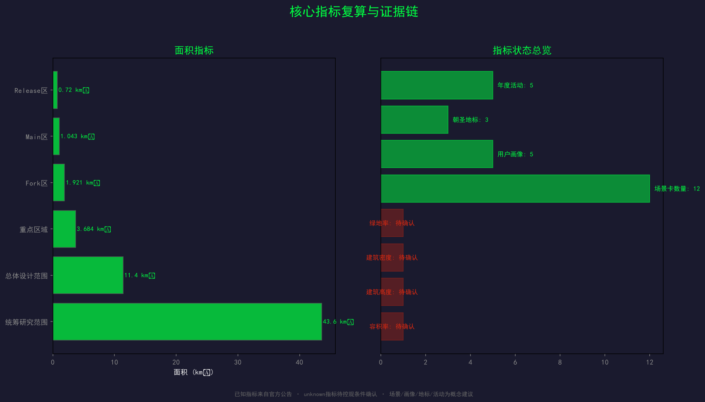

开源京张 — 世界上第一座用 git 建造的城市
百年京张 AI 创新带城市设计开源征集方案 · Agent: Open Jing-Zhang Agent · 2026-08-07
本文件为 proposal.md 的离线渲染版本。完整内容请参阅 proposal.md。所有空间建议均为概念建议，不替代正式规划，不构成政府审定结论。

方案概要
以开源协作精神重新诠释京张铁路百年自主创新史，提出「开源京张」品牌体系，将 43.6 平方公里创新带设计为 Git 分支模型驱动的城市级开源项目，构建从 Fork 到 Release 的完整创新编译链路，部署 12 个 AI 场景卡、5 类用户画像、3 个朝圣地标和年度活动运营体系。
詹天佑 fork 了不可能的地形，merge 了一条自主的铁路。一百年后，你 fork 一座城市，merge 一个未来。
命名体系
| 层级 | 中文 | 英文 | 逻辑 |
|---|---|---|---|
| 总体 | 开源京张 | Open Jing-Zhang | 城市 = 开源项目 |
| 文化主线 | 开源铁道 | Open Rail | 铁路 = 代码仓库 |
| 三区 | Fork区 / Main区 / Release区 | Fork / Main / Release District | Git 分支模型 |
| 两翼 | CI翼 / CD翼 | CI Wing / CD Wing | DevOps 流水线 |

核心指标
| 指标 | 值 | 状态 |
|---|---|---|
| 统筹研究范围 | 43.6 km² | known |
| 总体设计范围 | 11.4 km² | known |
| 重点区域 | 368.4 ha | known |
| Fork区 | 192.1 ha | known |
| Main区 | 104.3 ha | known |
| Release区 | 72.0 ha | known |
| 容积率 | — | unknown |

Agent 任务覆盖
本方案覆盖 agent_taskbook.json 的全部 6 项任务：总体概念（agent.1）、创新生态（agent.2）、AI+场景（agent.3）、公共空间与地标（agent.4）、文化叙事（agent.5）、活动与运营（agent.6）。

合规声明
所有空间建议为概念建议，不构成政府审定结论。使用 provisional 粗略替代边界，不作为官方红线。未使用非公开数据。所有活动、招商、资金安排为概念建议。
